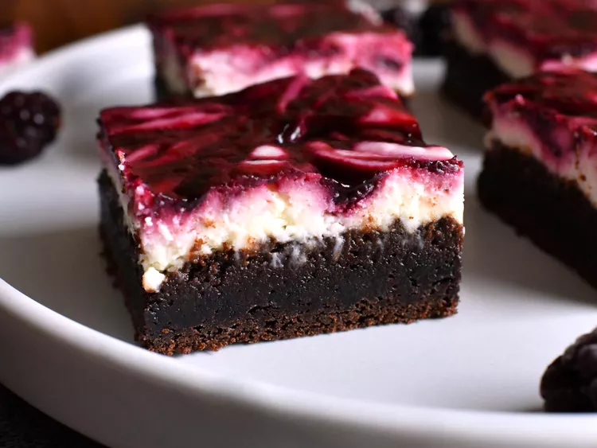

Blackberry Cheesecake Brownies

Description
For these blackberry cheesecake brownies, a fruity, blackberry-swirled cheesecake layer sits atop a chewy chocolate brownie layer in this gorgeously tasty dessert. Plan ahead, as these need time to chill in the refrigerator.
Ingredients
Blackberry Sauce
- 6 cups frozen blackberries
- 1 cup white sugar, or to taste
- 4 tablespoons fresh lemon juice
- 1 teaspoon freshly grated lemon zest, or to taste
- 4 teaspoons cornstarch
- 4 tablespoons water
Brownie Layer
- 2 cups unsalted butter, melted
- 4 cups firmly packed light brown sugar
- 2 teaspoons salt
- 4 large egg, at room temperature
- 4 large egg yolk, at room temperature
- 8 teaspoons vanilla extract
- 2 cups unsweetened cocoa powder
- 2 cups all-purpose flour
- 1 teaspoon baking soda
Cheesecake Layer
- 2 pounds full fat cream cheese, at room temperature
- 1 ⅓ cups white sugar
- 1 pinch salt
- 1 pinch ground nutmeg
- 1 large egg white, at room temperature
- 2 teaspoons fresh lemon juice
- 1 teaspoon vanilla extract
- 3/4 cup heavy whipping cream, at room temperature
Steps
- For blackberry sauce, combine frozen blackberries, sugar, lemon juice, and lemon zest in a small saucepan set over medium-low heat. Cook, stirring often, until berries fall apart, 8 to 10 minutes. Remove mixture from heat, and pour into a fine mesh sieve set over a bowl. Use the back of a wooden spoon or spatula to press berry mixture through the sieve, extracting as much juice as possible. Discard seeds. Pour sauce back into saucepan and bring to a simmer over low heat.
- Stir cornstarch and water together in a small bowl until thoroughly combined; stir cornstarch slurry into blackberry sauce and continue to cook, stirring constantly, until slightly thickened, 1 to 2 minutes. Remove from heat, and allow blackberry sauce to cool completely, about 20 minutes. The sauce can be refrigerated to speed up cooling.
- Preheat the oven to 350 degrees F (175 degrees C). Line an 8x8-inch square pan with enough parchment paper to have overhang on all sides.
- Prepare brownie layer: whisk melted butter, brown sugar, and salt together in a large bowl until thoroughly combined. Whisk in egg, egg yolk, and vanilla until thoroughly incorporated. Add in cocoa powder, flour, and baking soda and stir until just combined. Batter will be somewhat thick. Spread brownie batter into the prepared pan in a smooth, even layer.
- Prepare cheesecake layer: Beat cream cheese, white sugar, salt, and nutmeg together in a bowl with an electric mixer until smooth and creamy. Add in egg white, lemon juice, and vanilla and mix until thoroughly incorporated. Pour in heavy cream and mix until combined. Pour cheesecake layer over brownie layer and smooth into an even layer.
- Place dollops of the cooled blackberry sauce over the cheesecake layer. Use a knife to swirl only the cheesecake layer and blackberry sauce together; taking care not to go into the brownie layer. Swirl as many or as few times as needed to get the desired marbled effect.
- Bake in the preheated oven until the center of the bars are puffed and mostly set, 55 to 60 minutes. The edges will bake up taller than the center, and will begin to turn golden brown when they are done. Allow bars to cool to room temperature in the pan, then refrigerate for at least 4 hours to overnight. Cut into 16 bars before serving.